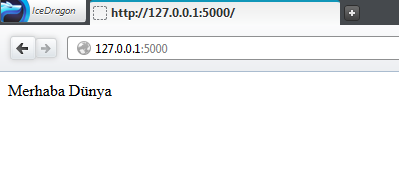

Kolay Yoldan Flask Framework
Flask framework python ile yazılmış genişletilebilir br microframework olarak da tanımlanabilir. Ancak yaptıklarına baktığınızda pek de mikro olmadığını görebilirsiniz.
Benim gibi django'yu, rails'i karmaşık bulanlar için Flask framework mükemmeldir.
Flask Framework Kurulumu
Flask framework'ü kurmak için konsoldan şu komutu vermeniz yeterlidir.
pip install Flask
Bu adımdan sonra artık Flask kurulmuş olmalı. Eğer burada bir sorun yaşıyorsanız hatalara bakıp o hataları gidermeye çalışın.
Olası Hatalar
Windows ile kurulum yapıyorsanız yönetici izni gerekebilir. Linux için bahsetme gereği duymadım pek çünkü zaten Linux ile kurarken sudo komutunu girmeniz gerektiğini bildiğinizi varsayıyorum.
İlk Flask Uygulamamız
İlk uygulamamız diğer tüm uygulamalarda olduğu gibi burada da basit bir uygulama olacaktır. Bir Merhaba Dünya Uygulaması yapmak bizim için idealdir.
Flask kütüphanemizi aktaralım.
from flask import Flask app = Flask(__name__) @app.route('/') def merhaba_dunya(): return "Merhaba Dunya" if __name__ == "__main__": app.run()
İlk uygulamamızı yaptık. Uygulamamız http://127.0.0.1:5000 ya da http://localhost:5000 üzerinde çalışmakta.

Burada bilmemiz gereken şey app = Flask(__name__) kısmıdır. Flask sınıfını app değişkenine aktararak sınıfı türettik. Eğer routing işlemine aşina iseniz ya da ufaktan da duymuşluğunuz varsa ne olduğunu bilirsiniz. O yüzden @app.routing('/') işlemini fazlaca detaylandırmaya gerek duymuyorum. Ama belirtelim http://site.com/burasi-route linkte gördüğünüz burasi-route kısmı aslında app.route('/burasi-route') şeklinde tanımlanmıştır.
Çalışmanızda yaptığınız hataları görmek isterseniz eğer app.debug = True demeniz yeterlidir. İlk giriş için fazlaca detaya gerek yok ama belirtmekte fayda var. Diğer frameworklerde olan bir özellik yani autoreload olayı burada da var. Nedir bu olay? Flask projenizde bir değişiklik yaptığınız anda otomatik olarak o değişikliği uyguluyor. Her defasında projenizi baştan başlatmanıza gerek olmuyor. Bunun için app.run işlevine bir parametre göndermek gerekiyor. use_reloader parametresine True değeri göndererek yani use_reloader=True şeklinde bir değer yaparak otomatik yenileme işlemini yapabiliriz. Yine run işlevine port ayarı da verebiliriz.
app.run(port=80, use_reloader=True)
Artık uygulamamız 80. portta yani direkt olarak localhost üzerinde çalışacak ve değişiklikler anında uygulanacaktır.
Bir giriş için hayli uzun olmuş olabilir. İyi çalışmalar.
2 dakikada okunabilir.
Comments
Comments powered by Disqus